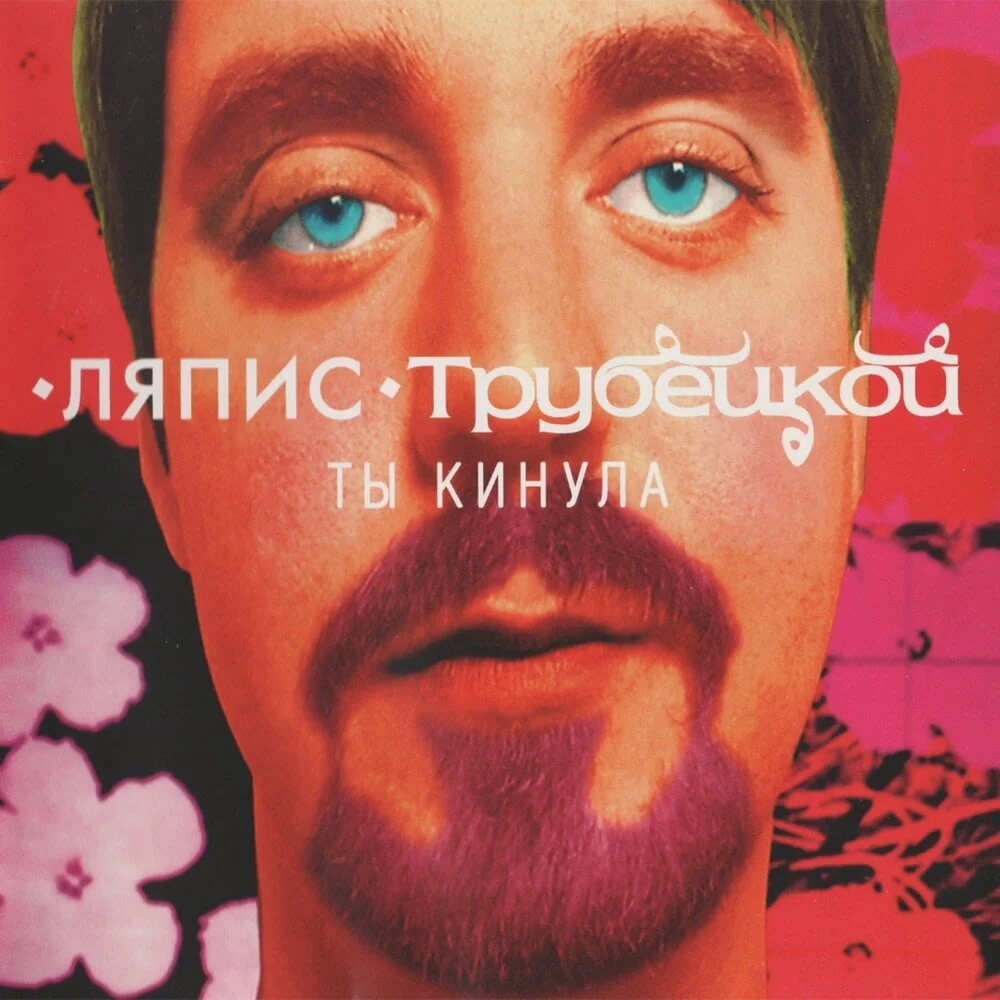

A Matter of TrustМузыка · сегодня в 08:24ПодписатьсяЛяпис Трубецкой — ЕвпаторияЕсть песни, которые возвращают лето.  АУДИОЛЯПИС ТРУБЕЦКОЙЕвпаторияТы кинула · альбом33⅓STEREO НАЖМИТЕ PLAYMP3 3200:000:00—:—ЕвпаторияЛяпис Трубецкой1×Скорость0.75×1× ✓1.25×1.5×2× Маленькое путешествие к морю. Включайте, закрывайте глаза — и вы уже там.#ляпиструбецкой#музыка🔥 24❤️ 18🎵 7＋
12 комментариев
Теперь хочется всё бросить и уехать к морю.
Ответить · 5 нравится